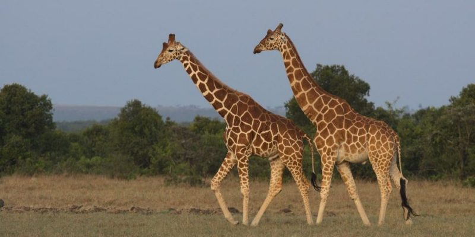

JIRAFA
(Giraffa camelopardalis)
Se encuentran en todo tipo de ambientes de sabana, si bien prefieren áreas ricas en acacias,
los machos suelen aventurarse en el interior de densas arboledas en busca de más follaje.
Debido a que sólo beben ocasionalmente, las jirafas pueden encontrarse lejos de fuentes de agua.
Por lo general las jirafas se encuentran en grupos, aunque son grupos abiertos cuya composición tiende a cambiar constantemente.
Tienen pocos vínculos sociales fuertes y las agrupaciones suelen cambiar de miembros cada pocas horas

- Son los animales de mayor altura del planeta, pueden llegar a los 6 metros.
- Pesan entre 750 y 1600 kilos.
- Corren hasta 60 kilómetros por hora.
- Su lengua es negra y puede medir hasta 50 centímetros.
- Poseen un cuello muy largo: puede alcanzar los 2 metros.
REGRESAR AL MENU